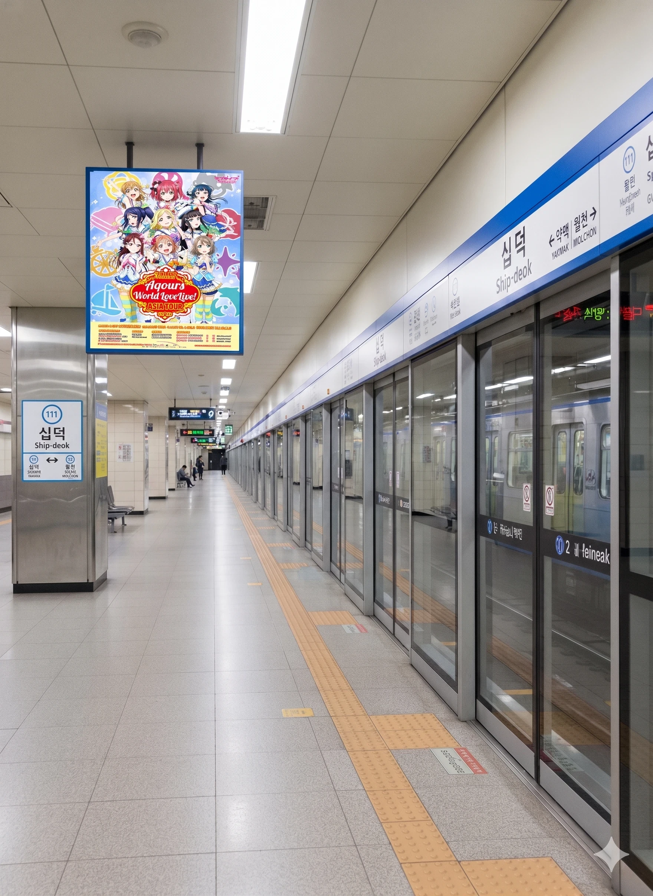

효빈광역시 중구 십덕동에 위치한 근린공원. 원래 이름은 '십덕공원(十徳公園)'이었으나, 2023년 리모델링을 거쳐 '십덕 아트파크'로 재개장했다.
이름에서 알 수 있듯이, 지명 하나 잘못 지었다가 강제로 성지화된 케이스의 끝판왕이다. 원래는 조선시대 이 지역에 살던 선비들이 '열 가지 덕목'을 숭상했다고 하여 붙여진 매우 고상하고 유서 깊은 이름이었으나, 현대에 와서 '오타쿠(씹덕)'라는 은어와 발음이 같아지는 바람에 본의 아니게 서브컬처 팬들의 성지가 되어버렸다.
1990년대까지만 해도 십덕동은 평범한 주거 지역이었고, 공원도 평범한 동네 뒷산이었다. 하지만 인터넷 문화가 발달하면서 2000년대 중반부터 전국의 네티즌들이 "효빈시에 십덕동이 있대 ㅋㅋㅋ", "거기 가면 씹덕들 사냐?"라며 조롱 섞인 밈(Meme)으로 소비하기 시작했다. 이에 분노한 주민들이 동명 변경을 신청하려 했으나, "조상의 얼이 담긴 이름을 네티즌 장난 때문에 바꿀 순 없다"는 보수적인 여론에 부딪혀 무산되었다.
2022년 취임한 박효빈 시장은 이 상황을 보고 무릎을 탁 쳤다. "피할 수 없으면 즐겨라. 오타쿠의 관문(Gateway)으로 만들자."
시장은 반대하는 주민들을 "땅값이 오를 것"이라는 논리로 설득했고, 관광과 주도 하에 대대적인 공원 리모델링을 단행했다. 그 결과, 고루한 유교 공원이 서브컬처 조형물과 포토존이 가득한 '십덕 아트파크'로 다시 태어나게 되었다. 조상님들이 무덤에서 벌떡 일어날 일이다.
공원 입구에 세워진 거대한 아치형 조형물. 한자 '十徳'이 아주 굵은 궁서체로 새겨져 있는데, 조명 색깔이 시시각각 화려하게 변하는 바람에 마치 '이세계로 통하는 문' 같은 느낌을 준다. 방문객들은 이 앞에서 '오타쿠 하트' 포즈를 취하고 인증샷을 찍는 것이 국룰이다. 가끔 코스프레를 하고 "십덕동에 입성했다능!"이라며 외치는 유튜버들이 출몰한다.
산책로를 따라 다양한 서브컬처 캐릭터 조형물이 설치된 구역. 저작권료가 비싼 메이저 캐릭터들은 섭외하지 못해, '어디서 많이 본 것 같은데 미묘하게 다른' 오리지널 캐릭터들이나, 고송 애니메이션 아카이브에서 기증받은 지역 마스코트들의 모에화 버전이 서 있다. 오히려 이 B급 감성이 '킹받는다'며 인기를 끌고 있다.
일본 신사의 에마(Ema) 걸이를 벤치마킹한 소원 기원 공간. 나무패 대신 '캐릭터 카드'에 소원을 적어 걸어둔다. 대부분 "가챠 대박 나게 해주세요", "최애캐랑 결혼하게 해주세요", "3기 나오게 해주세요" 같은 망상 소원들이 적혀 있다. 시험 기간에는 당선역 대신 이곳에 와서 "수능 만점 받고 애니 보게 해주세요"라고 비는 학생들도 있다.

1호선 십덕(十徳)역. 공원 바로 앞에 위치한 역으로, 역명판 자체가 성지다. 과거에는 역명판에 '오타쿠 왔다감' 같은 낙서를 하는 사람들 때문에 골머리를 앓았으나, 현재는 역무실 옆에 '방명록 존'을 따로 만들어 합법적으로 낙서를 할 수 있게 해줬다. 안내방송이 나올 때 "이번 역은 십덕, 십덕 역입니다"라고 하는데, 왠지 성우가 웃음을 참고 있는 것 같다는 도시괴담이 있다.